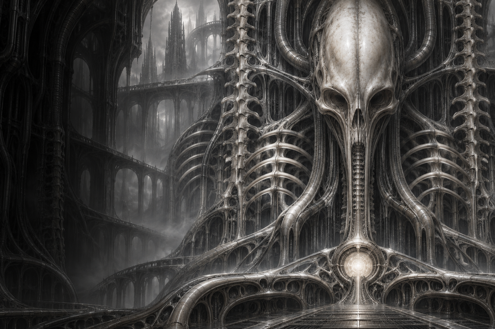

03 NEURAL INPUT
/
Three specimens. One shared consciousness.
An interface between the organic and the machine.
Touch the surfaces. Wake what sleeps within.

A sanctuary with a pulse.
The organism is aware of your presence.
JUST NOWBone, chrome, and blackened metal. Each surface is an artifact; each control, an organism.
Wake the vessel, tune its resonance, or follow its neural scan. Every control changes the living specimen.
Open a specimen to inspect the full artwork, or download the original image from the viewer.
Neither entirely human.
Nor entirely machine.